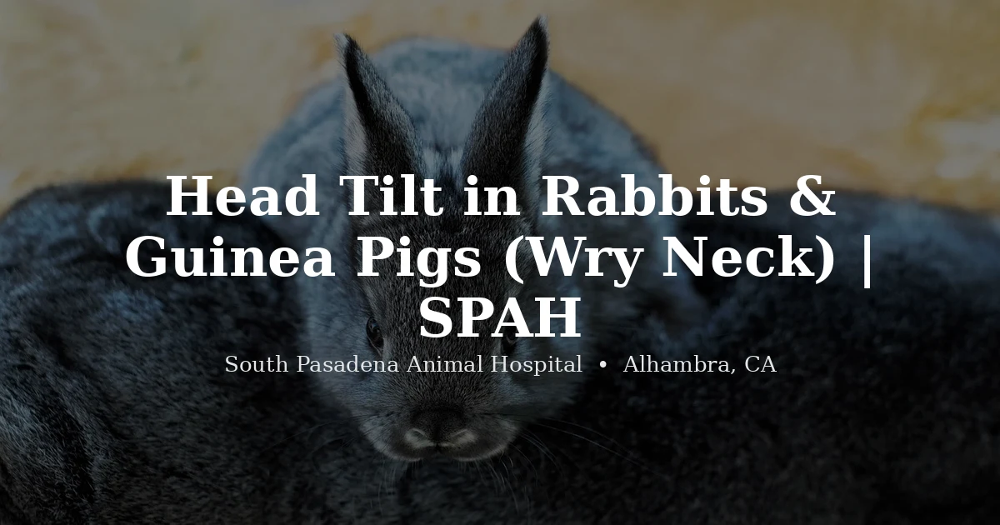

October 14, 2026 · 7 min read
Head Tilt in Rabbits & Guinea Pigs (Wry Neck)

The first time you see it, a head tilt is genuinely alarming. Your rabbit's head is cocked hard to one side, it can't quite walk straight, maybe it's even rolling. Owners often arrive at our Alhambra clinic convinced the worst has happened. So let's start with the single most important thing we tell them: a head tilt is not a death sentence, and it is not a reason to give up. Many of these animals get better — sometimes completely — when we treat them promptly.
Now let's talk about what's actually going on, because understanding the cause is what makes the difference.
What a head tilt actually is
The medical word is torticollis; most owners know it as "wry neck." The tilt itself is a symptom, not a disease — it's what happens when the balance system in the head gets disrupted. Along with the cocked head you might see circling to one side, a loss of balance, rolling, or rapid flicking of the eyes back and forth. The animal isn't being dramatic. Its entire sense of which way is up has gone sideways, and that's as disorienting as it looks.
The two causes we see most in rabbits
Inner or middle ear infection
Rabbits have long, deep ear canals, and an infection that settles into the middle or inner ear sits right next to the balance organs. When it does, the head tilts toward the affected side. These infections often brew quietly — a rabbit doesn't scratch and whine the way a dog with an ear infection might — so the tilt can be the first obvious sign that anything was wrong at all.
E. cuniculi
Encephalitozoon cuniculi is a parasite that a large share of pet rabbits carry, often without ever showing signs. In some rabbits it eventually affects the nervous system, and a head tilt is one of the classic ways it announces itself. Telling an ear infection apart from E. cuniculi isn't something you can do by looking — it takes a vet exam and sometimes further testing — and it matters, because the treatment approach is different for each.
And in guinea pigs
Guinea pigs tilt too, and when they do it's most often a middle or inner ear infection, sometimes trailing a respiratory infection that spread. The picture looks similar — head held to one side, trouble balancing — and the message is the same: it's treatable, and the earlier we start, the better it tends to go. A guinea pig cocking its head to one side is not something to watch for a few days.
The other possibilities
Less commonly, a tilt comes from trauma to the head, a stroke-like event (more likely in older animals), or a growth affecting the ear or balance system. We mention these not to frighten you but to make the point that "head tilt" has several possible drivers, and sorting out which one you're dealing with is exactly the job of the exam.
Why you shouldn't wait — or give up
Here's the part we feel strongly about. A head tilt can make it hard for an animal to eat and drink, and in a rabbit, going off food is its own emergency that can snowball into gut problems fast. So there's a clock running. At the same time, we've watched too many rabbits get written off at the sight of a tilt when they had every chance of recovering. Both things are true: act quickly, and don't despair. Prompt treatment is what tips the odds in your favor, and even an animal left with a slight permanent tilt usually adapts and lives a full, contented life.
When to call a vet
Get a rabbit or guinea pig seen promptly — a same-day visit — if it:
- Is holding its head tilted to one side
- Is circling, losing balance, stumbling, or rolling over
- Has eyes that flick rapidly back and forth
- Is struggling to eat or drink because of the tilt
- Has any discharge, odor, or crust around an ear
We're a rabbit-savvy, small-mammal practice and see these cases regularly. You can reach our rabbit vet in Alhambra or our guinea pig vet page, learn more on our exotic vet services page, or check pricing to know what to expect. If your rabbit is also refusing food, read our guide to GI stasis on your way in — that combination needs care without delay.
Frequently Asked Questions
What causes a head tilt in rabbits?
Most often an inner or middle ear infection, or E. cuniculi, a parasite that affects the nervous system. Less commonly trauma, a stroke-like event, or an ear growth. A vet determines which, because the treatment differs — and starting sooner improves the odds.
Can a rabbit recover from head tilt?
Yes, and this is the part to hold onto. A tilt looks frightening but isn't a reason to give up. With prompt treatment many rabbits improve markedly and some recover fully; even those left with a permanent tilt usually adapt and live happy lives.
Is a head tilt an emergency?
Treat it as urgent — a same-day visit, not wait-and-see. It often comes with loss of balance, rolling, or trouble eating and drinking, which can spiral quickly, and early treatment genuinely changes the outcome.
Do guinea pigs get head tilt too?
They do. In guinea pigs it's usually a middle or inner ear infection, sometimes after a respiratory infection. It's treatable, especially caught early, so a guinea pig holding its head to one side should be seen promptly.